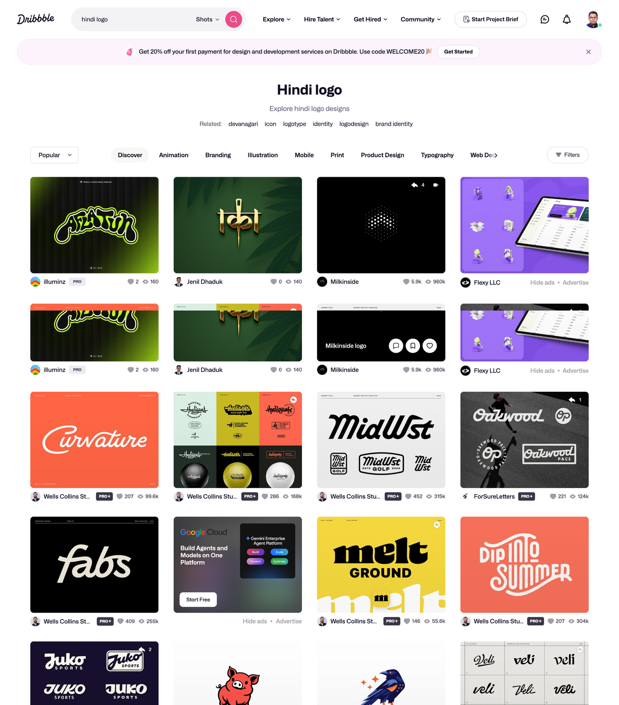
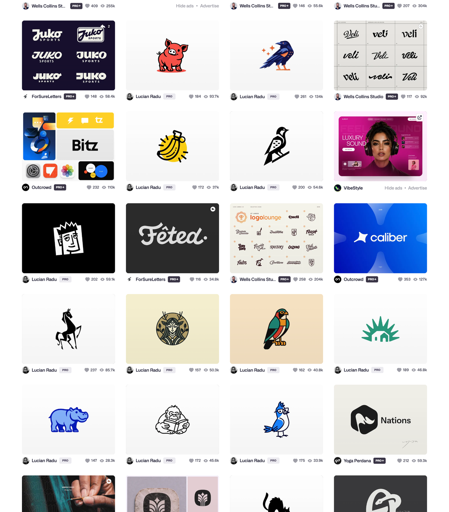

Close observation / Your latest screenshot
Illustration with
a clear silhouette.
Your screenshot is a long Dribbble results page headed “Hindi logo”. It contains several different design languages; the title alone does not make every result a Hindi design.




What we actually observed.
Picture-led marks
The pig, birds, horse, hippo and small animal portraits are recognisable isolated subjects. Their few strong shapes and deliberate knockout spaces give them character. The banana and plate/food symbols show that an everyday object can become a compact mark too.
Lettering studies
Juko, Veli, Summer and Blitz appear in multiple treatments. This is a method of comparing weight, terminals and rhythm, rather than simply picking a font and stopping. The gold Indic-looking mark near the top is a visual reference; its exact name is not verified here.
How that becomes this work
A pot host uses the illustrated-symbol approach for a biryani brand. A separate stamp interpretation tests silhouette and empty spaces. The two name experiments vary the position of one Hindi or Odia word while keeping the full brand name and actual script shaping.
What remains original
No pictured animal, bird, character, wordmark or distinctive silhouette was traced. The screenshot guides the presentation, economy and expressive direction. The Handi Host is a new generated character concept, not a claim of trademark clearance.